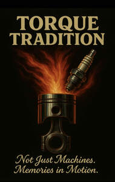

Trade Mark Journal No.2025/032 8 August 2025
UK00004241381 29 July 2025 (12,35,39)

- Class 12
- Motorcycle frames; Motorcycle handlebars; Motorcycle tires; Motorcycles; Motorcycle engines; Motorcycle kickstands; Mudguards for motorcycles; Fitted motorcycle covers; Frames for motorcycles; Motorcycle chains; Rims for motorcycles; Tyres for motorcycles; Sprockets for motorcycle drives; Wheels for motorcycles; Motors for motorcycles; Cranks for motorcycles; Brake pedals [parts of motorcycles]; Two-wheeled motor vehicles; Headlight mounts [parts of motorcycles]; Tires for two-wheeled motor vehicles; Motorbikes; Fork dust boots [parts of motorcycles]; Engines for motorcycles; Saddles for bicycles, cycles or motorcycles; Hubs for motorcycle wheels; Motorcycle foot pegs; Clutch cables [parts of motorcycles]; Spokes for motorcycles; Motorcycle swing arms; Saddlebags adapted for motorcycles; Kickstands for motorcycles; Wheel rims for motorcycles; Rack trunk bags for motorcycles; Two-wheeled vehicles; Tyres for two-wheeled vehicles; Chains for driving motorcycles; Motorcycle drive chains; Chainwheels for motorcycles; Stands of two-wheeled motor vehicles; Two-wheeled motorised vehicles; Mini-bikes.
- Class 35
- Auctioning of vehicles; Advertising services relating to the sale of motor vehicles; Advertising services relating to the motor vehicle industry; Advertising and marketing; Advertising and promotional services; Promotional and advertising services; Promotional advertising services; Advertising, marketing and promotional services; Advertising automobiles for sale by means of the Internet; Digital advertising services.
- Class 39
- Freight shipping; Freight transportation; Freight and cargo services; Freight forwarding; Forwarding of freight; Freight brokerage; Freight [shipping of goods]; Freight transportation brokerage; Freight ship transport; Packing of freight; Loading of freight; Freight services; Sea freight services; Express delivery of freight; Freight transportation services; Services for the transportation of freight; Sea freight forwarding services; International ocean freight shipping services; Freight forwarding between seaports; Freight brokerage services; Freight forwarding by sea; Freight brokerage [forwarding (Am.)]; Transportation of freight by water; Transportation of cargo; Cargo transportation; Cargo forwarding services; Arranging for the shipping of cargo.
Torque Tradition Limited